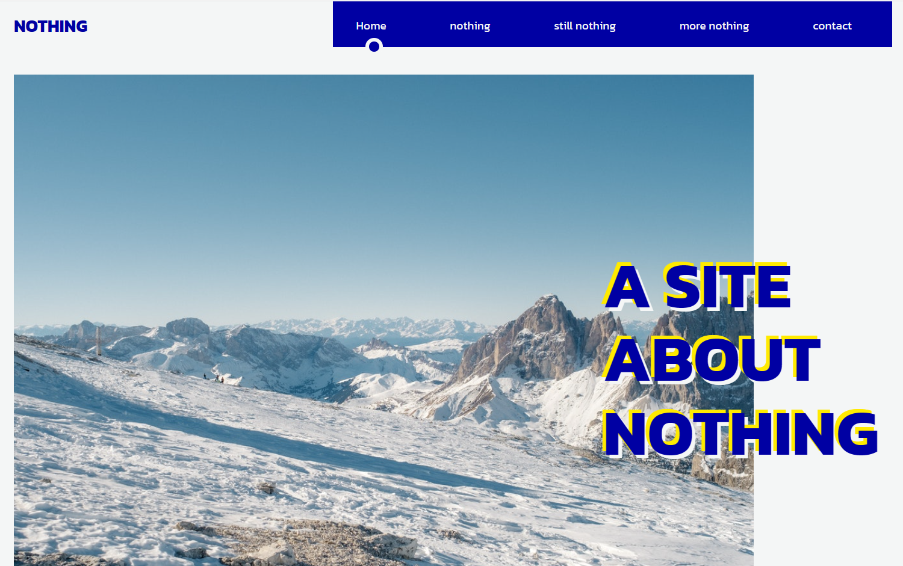
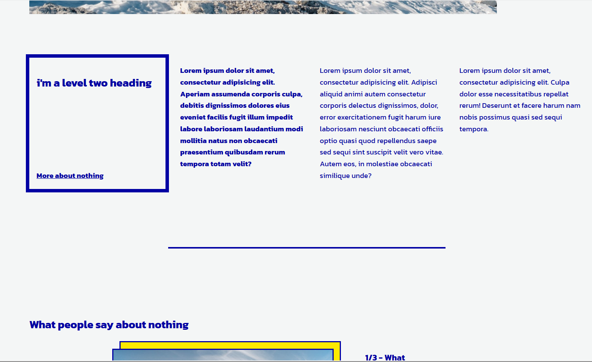
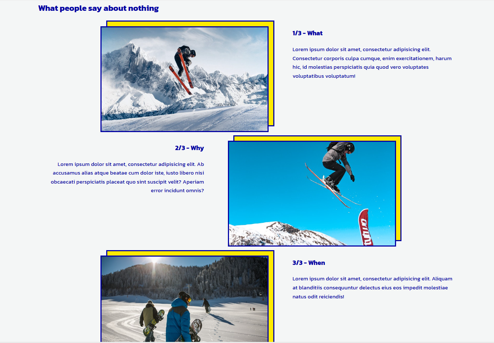
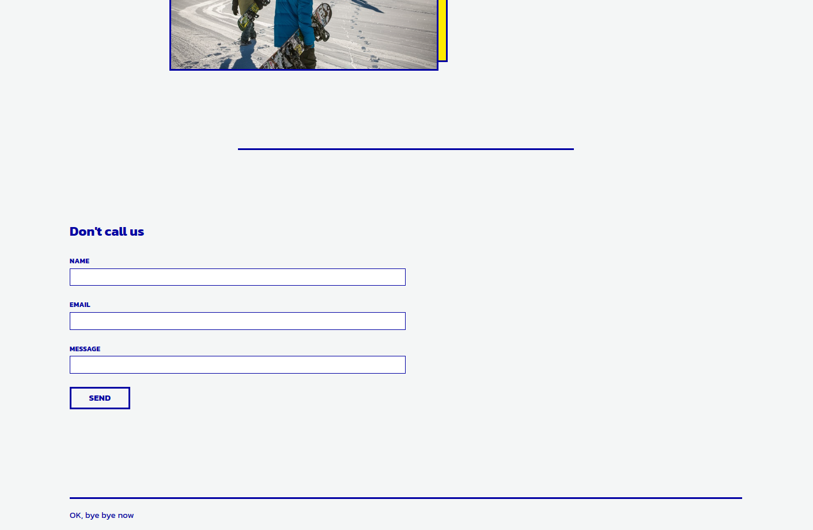
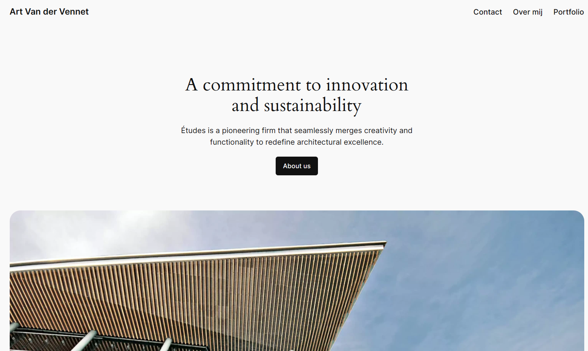
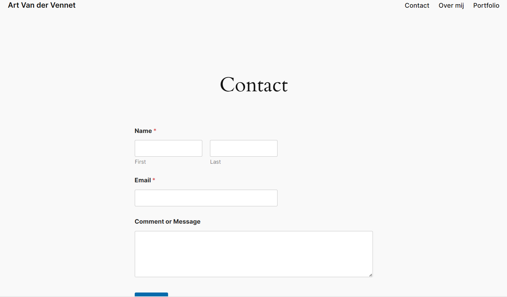
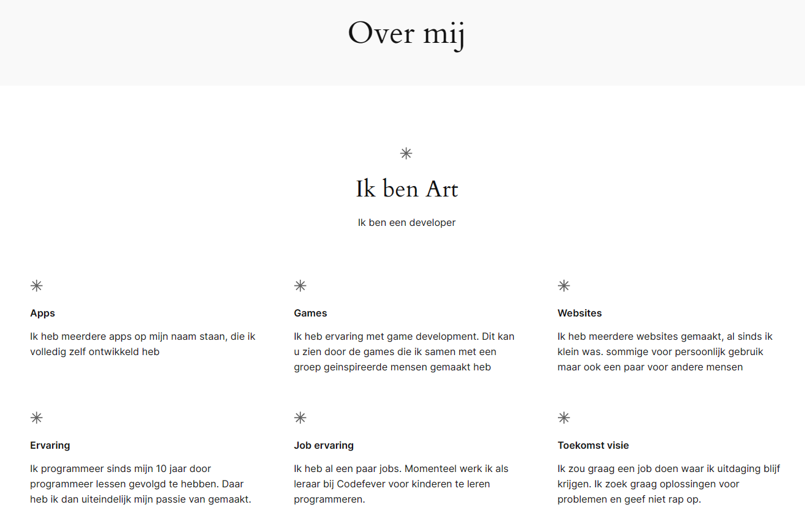

Wordpress
Beschrijving
In dit labo heb ik kennis gemaakt met Wordpress. een programma dat vooral wordt gebruikt om blogs te maken.
Realisatie
Dit labo bestond uit 2 delen. Het eerste deel was op school en daarbij kreen we 3 uur de tijd om een webpagina perfect na te maken zoals die in het voorbeeld stond. In het 2de deel moesten we zelfstandig een wordpress pagina maken.
Foto's
- 
- 
- 
- 
- 
- 
- 
Technische informatie
- wordpress
- plesk